Elektra (Elektra Natchios) (Terre-616)
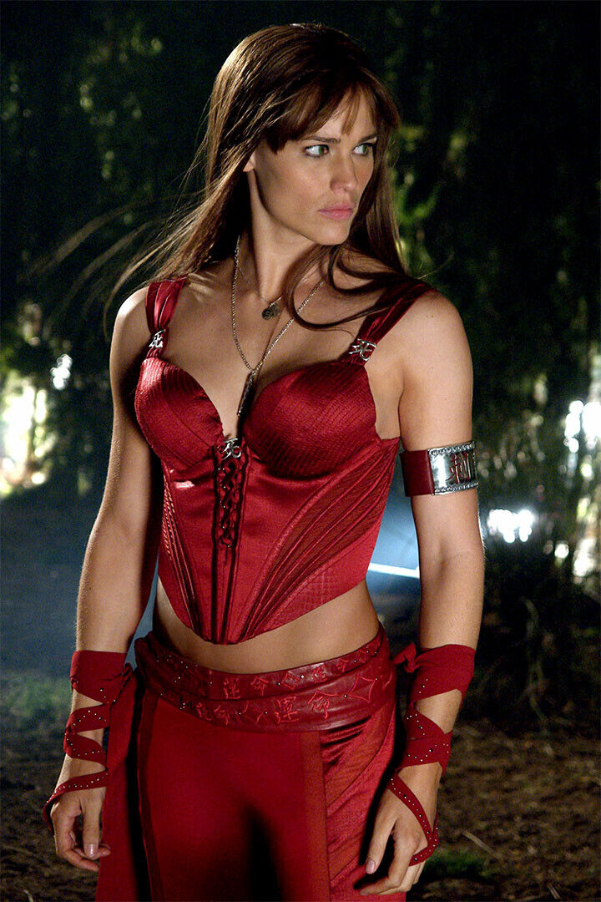
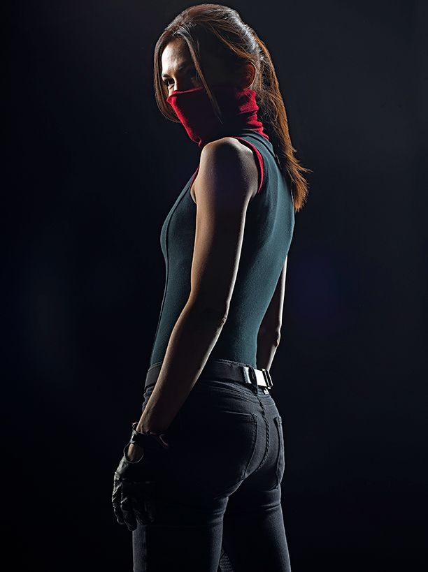
Origines :
Elektra Natchios est née sur une île grecque proche de la mer Égée, fille d'un ambassadeur grec, Hugo Natchios et de sa mère Christina.
Sa mère lui donne naissance prématurément avant de décéder, car elle venait de se faire tirer dessus par des hommes à bord d'un hélicoptère.
Ces tueurs avaient été engagés par son propre fils, Oreste, honteux que sa mère trompe Hugo.
Ce dernier est blessé dans l'attaque, et Oreste s'enfuit.
Après ce décès, Elektra fut élevée par son père tout en étant tourmentée par des visions et des voix d'origine inconnue.
Elle y réagissait en s'auto-mutilant, avant que son père ne l'envoie suivre une psychothérapie.
Un jour, elle est victime d'une tentative d'enlèvement, et son père insista pour qu'elle pratique les arts martiaux.
Elle avait dix ans lorsqu'elle commença son entraînement et, à l'époque, son senseï se moqua d'elle, la traitant de « petite fille de riche qui gaspillait l'argent de son père ».
Deux ans plus tard, elle avait cependant largement dépassé ses attentes et, n'ayant plus rien à lui apprendre, il lui parla des Chastes, un groupe de guerriers menés par Stick, qui étudiaient et s'entraînaient pour maîtriser l'art du combat.
Elle parvient à retrouver Stick et à devenir son élève, mais ce dernier la jugea trop colérique et l'abandonna.
Elle continuera néanmoins à s'entraîner de son côté et attira l'attention de la Main, plus précisément d'une jeune femme nommée Aka.
Contrairement à Stick, Aka écouta Elektra et feignit de se soucier d'elle, gagnant ainsi sa loyauté.
Alors que le père d'Elektra fut nommé ambassadeur de Grèce aux États-Unis, Elektra le suivit et intégra l'université Columbia, où elle fit la rencontre du jeune Matt Murdock.
Aka lui demanda d'amadouer Matt afin de l'intégrer à la Main.
Une nuit, il se fit donc remarquer alors qu'il sautait de toit en toit et le provoqua.
Elle laissa tomber des vêtements pour le narguer, mais sans se faire prendre.
Finalement, Matt sera arrêté par erreur par la police, au grand amusement d'Elektra, mais il sera relâché lorsqu'ils réalisèrent qu'il était aveugle.
Le lendemain, Elektra et Matt firent une virée en voiture, et se rendirent au bord d'une falaise ou elle lui dit qu'ils étaient deux êtres différents, différents de tous les autres.
Elle sauta alors de la falaise et traversa une plaque de glace pour tomber dans l'eau.
Matt se précipita à son secours, mais ne la trouva pas.
En remontant à la surface, il réalisa qu'elle était saine et sauve, et riait en s'éloignant à toute allure dans sa voiture.
Ils commencèrent ensuite à s'entraîner ensemble et tombèrent progressivement amoureux l'un de l'autre.
Une nuit, Stick réveilla Matt et lui dit de se tenir à l'écart d'Elektra, l'avertissant qu'elle était dangereuse, mais Matt ignora les conseils de son ancien mentor.
Durant des années, Elektra a travaillé comme chasseuse de prime et tueuse à gages.
Après avoir accepté un contrat à New York, elle croisa la route du justicier aveugle Daredevil, et fut surprise d'apprendre qu'il s'agissait en réalité de son ancien amour, Matt Murdock.
Les deux firent équipe face à Bullseye, qui perdait la raison à cause d'une tumeur.
Daredevil désapprouvait le choix de carrière d'Elektra, mais ils éprouvaient toujours une profonde affection l'un pour l'autre.
Ensemble, ils combattirent la Main et tentèrent de traquer Stick.
Sa relation avec Matt changea lorsque Wilson Fisk, alias le Caïd, l'engagea comme tueuse à gages.
Elle fut envoyée tuer Ben Urich et entra en conflit avec Matt.
Il l'arrêta et déjoua les plans du Caïd, qui ordonna de tuer Foggy Nelson (le meilleur ami de Matt) en représailles.
Mais lorsque Foggy la reconnut, elle ne put exécuter son contrat et lui laissa la vie sauve.
Peu après, Bullseye décida que le seul moyen de retrouver son statut d'assassin en chef du Caïd était de tuer Elektra.
Il la traqua à travers la ville, avant de l'empaler avec son propre saï, et elle mourut dans les bras de Matt.
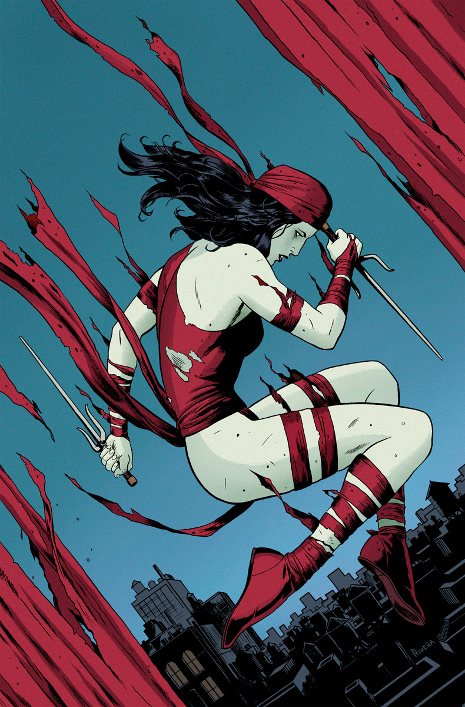
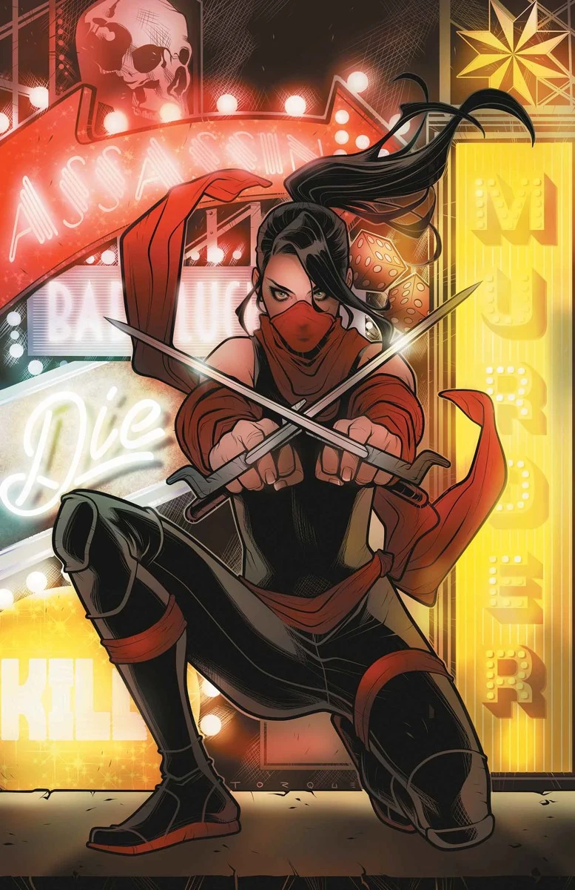
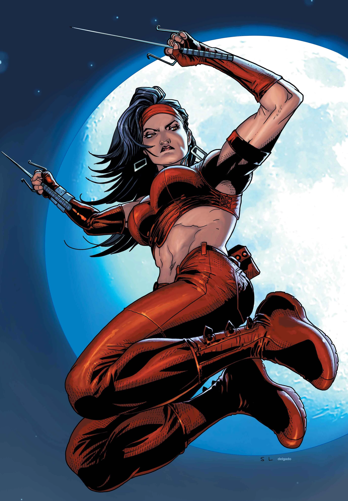
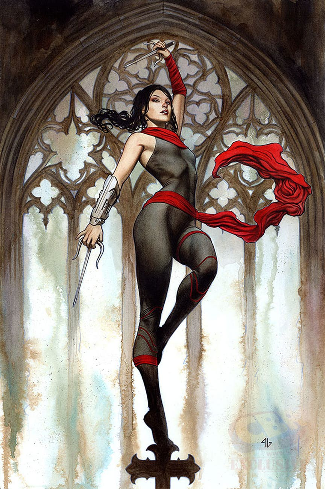
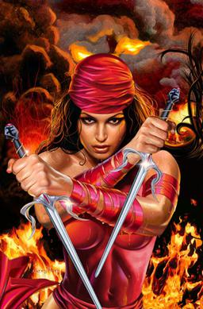
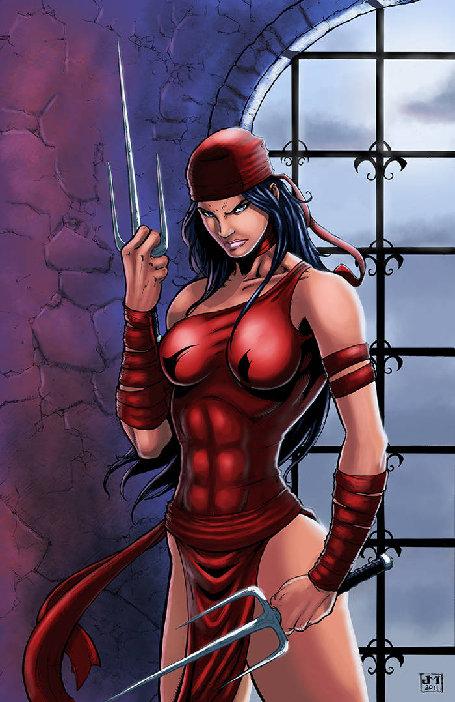
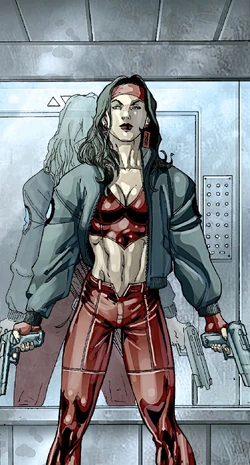
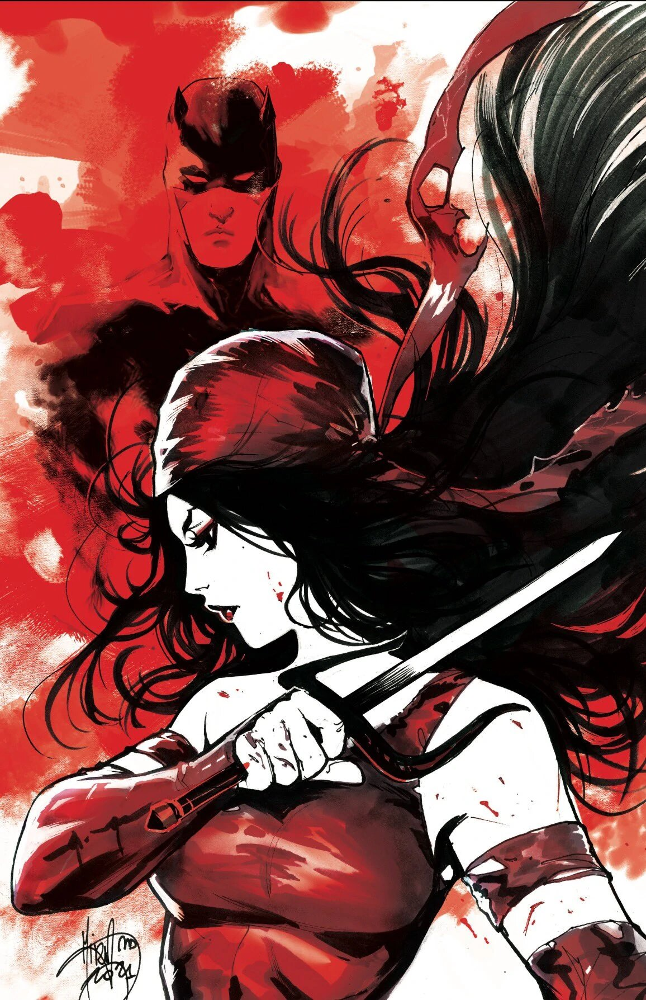
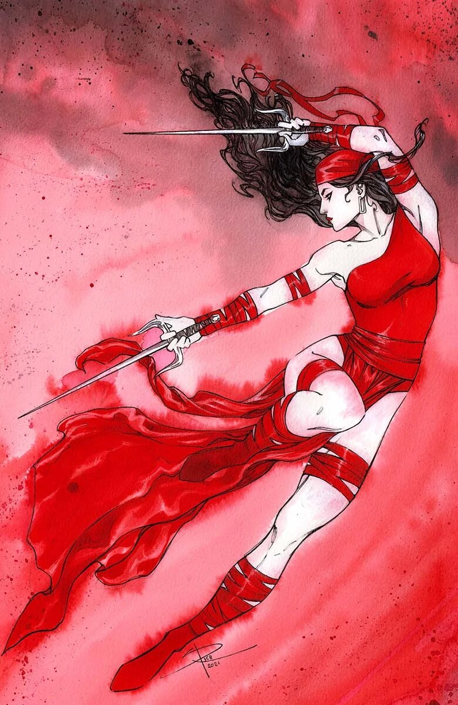
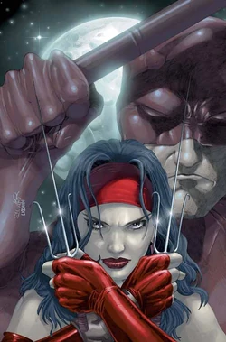
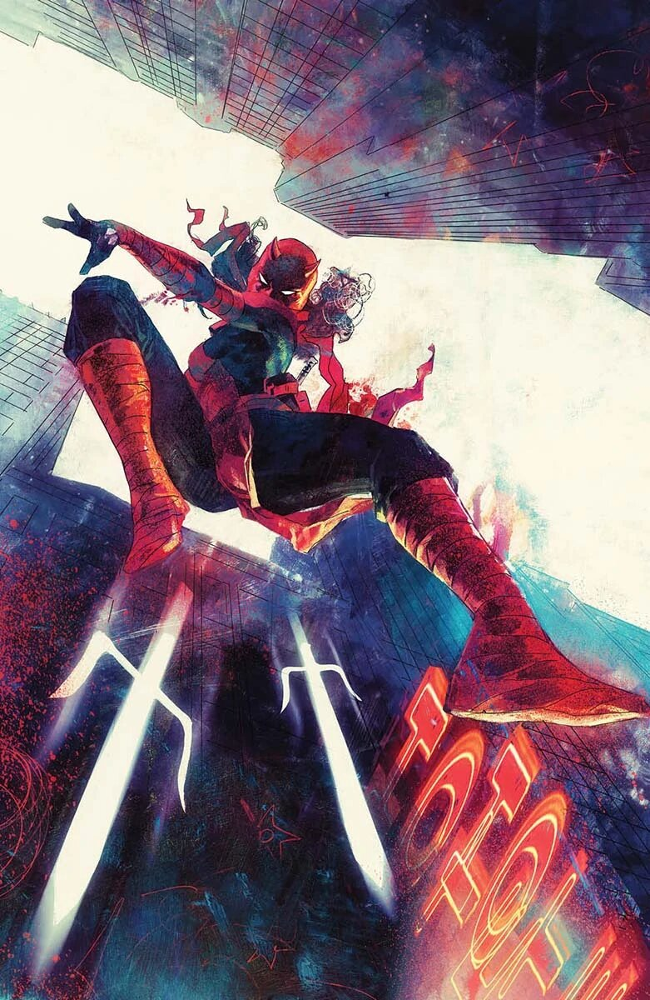
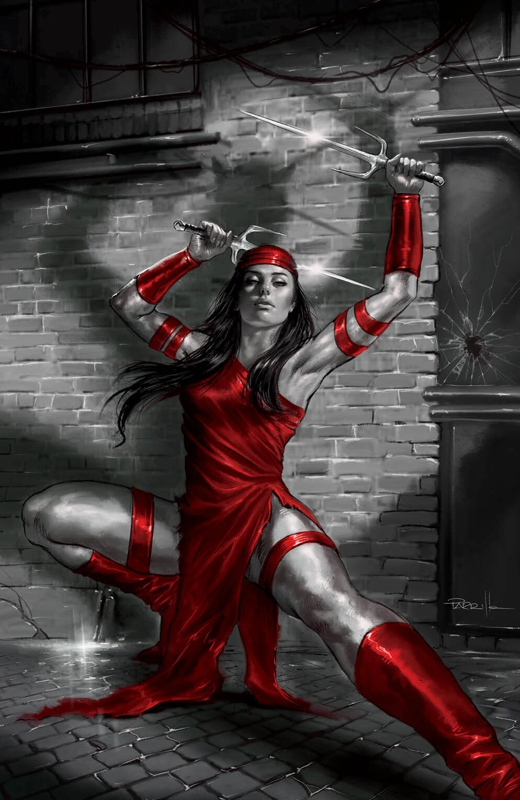
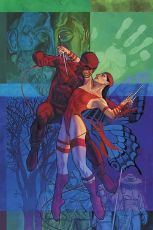
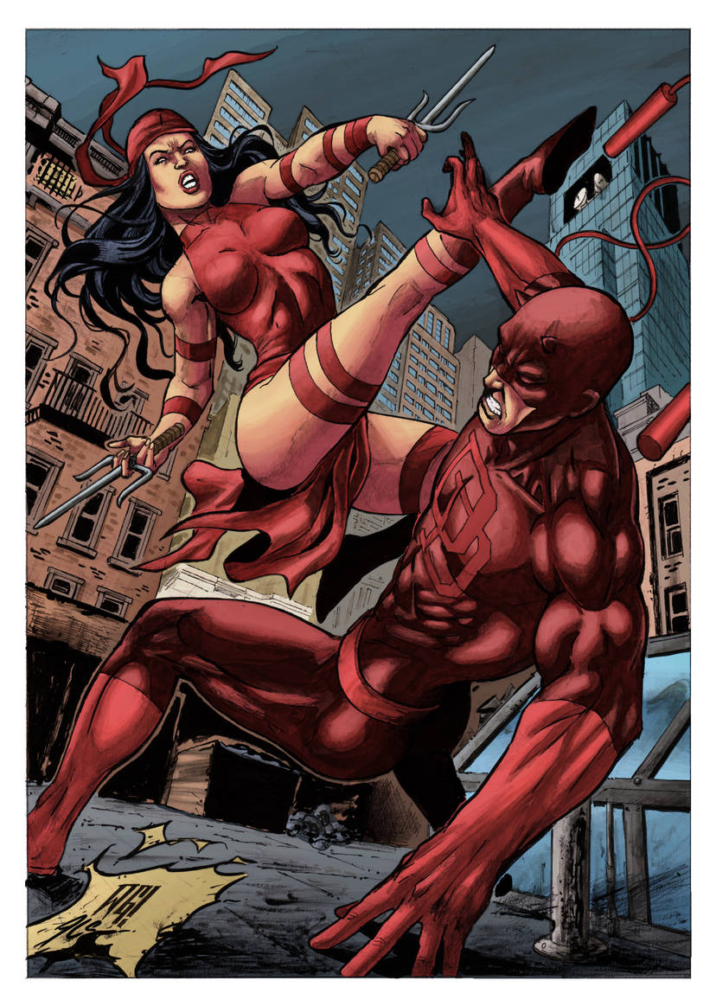
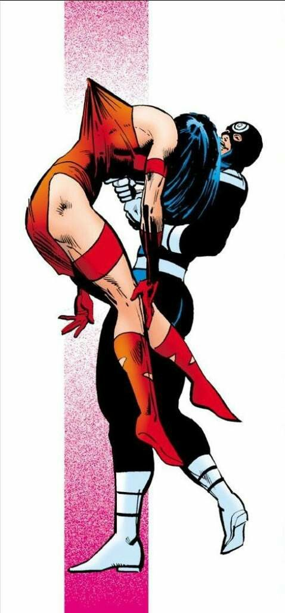
Capacités :
Elektra n'a, à la base, pas de super-pouvoirs, mais est entraînée aux arts-martiaux dès son plus jeune âge.
Elle maîtrise différents arts-martiaux, comme le ninjutsu, le kung-fu ou le karaté.
C'est une spécialiste dans le combat rapproché, et est une guerrière redoutable aussi bien à mains nues qu'avec des armes.
Elle possède une force, une agilité et des réflexes poussés au maximum du potentiel humain.

Costume :
Elektra porte le plus souvent un justaucorps rouge sans manche, laissant ses jambes et son ventre largement découverts.
Elle porte souvent un bandeau rouge autour de la tête, ainsi que des bandes rouges autour des avant-bars et des cuisses, ainsi que de grandes bottes rouges.
Lorsqu'elle endosse l'identité de Daredevil, elle porte un costume plus proche de celui de son amant.
Son costume est rouge et noir, plus sombre et agressif que son costume classique.
Elle porte une combinaison ajustée, proche d'un uniforme tactique, ainsi qu'un masque de Daredevil rouge intégral, avec ses cornes et ses yeux blancs caractéristiques.
Équipes affiliées